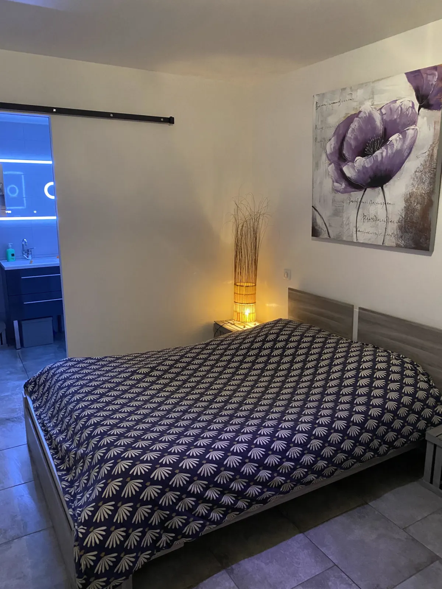
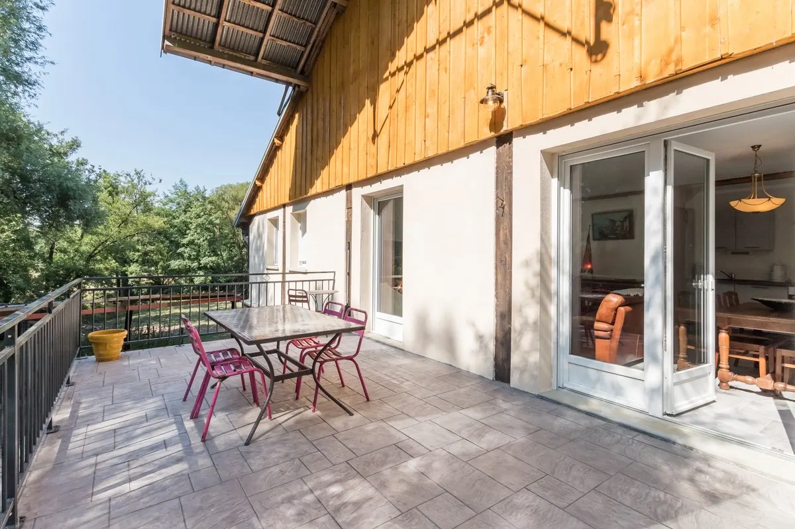
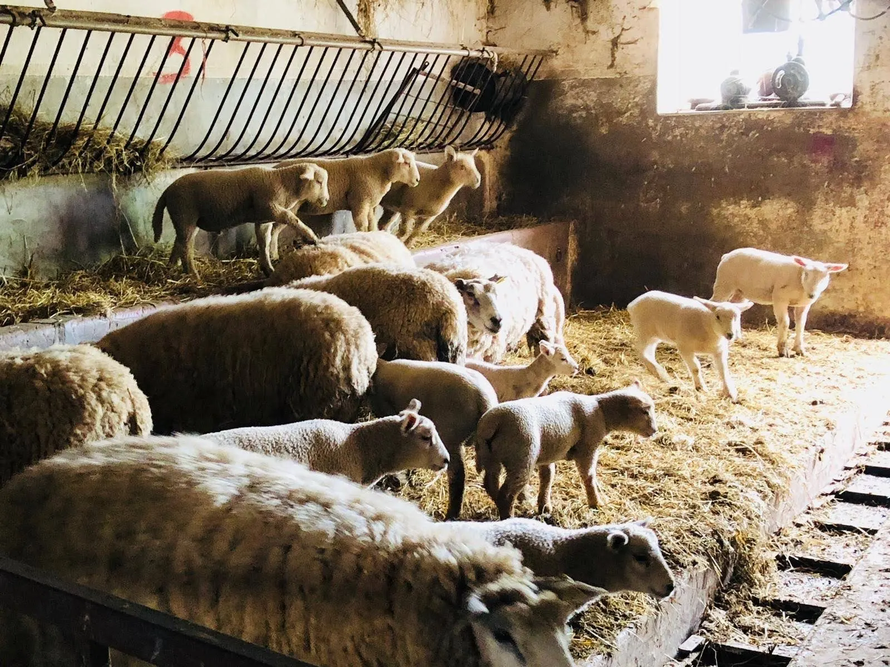
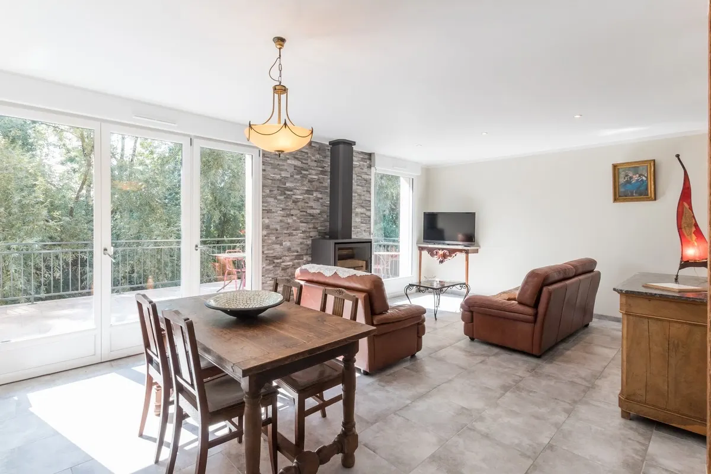
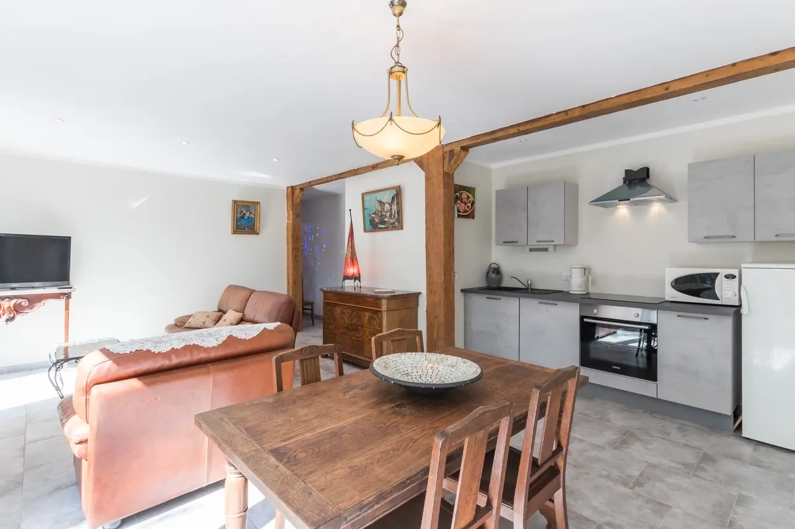
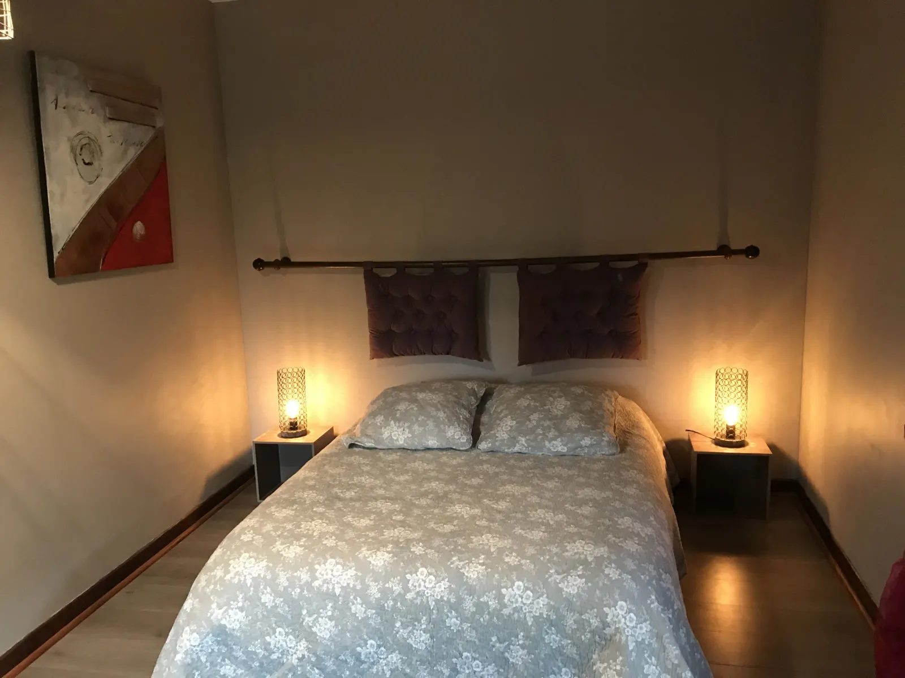
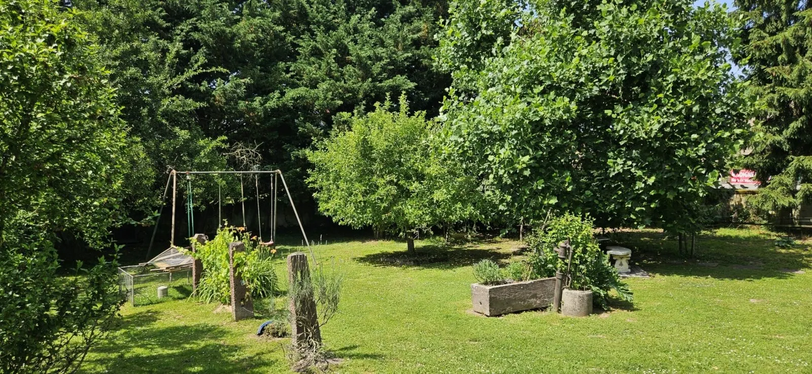
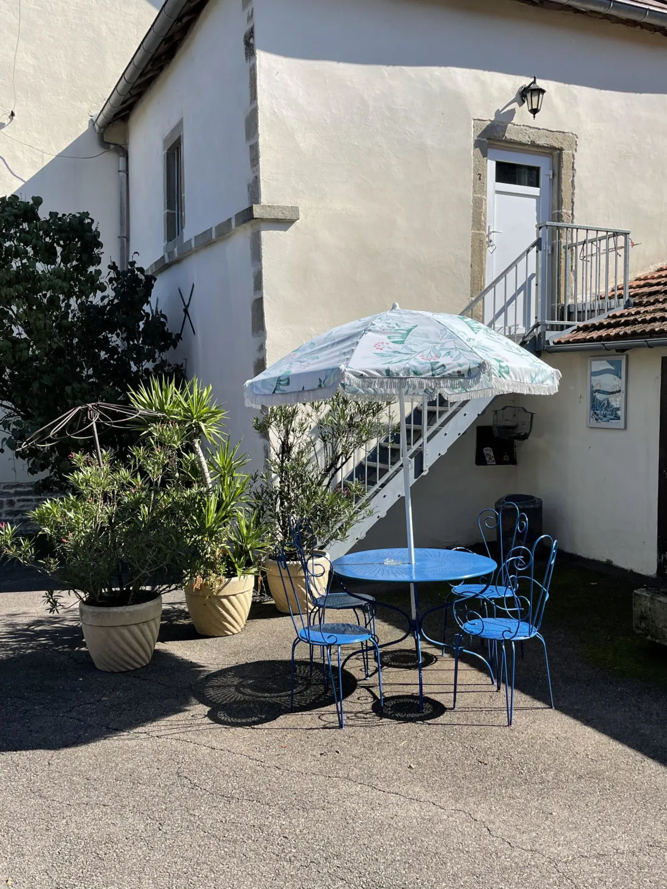
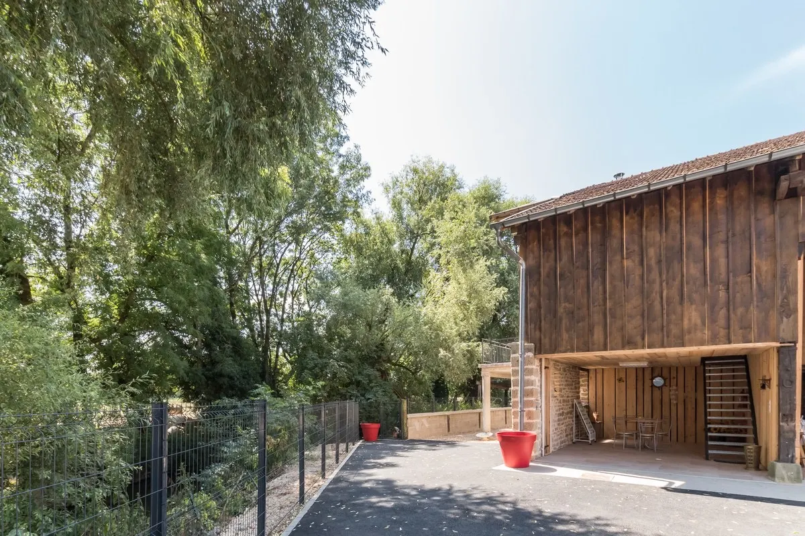
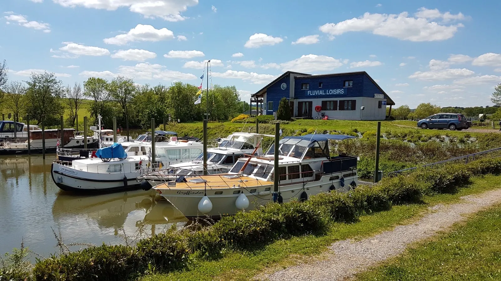

Le studio « Les petites fleurs »
Studio meublé classé : un lit de 140 cm, une salle d'eau et un WC, un coin kitchenette avec réfrigérateur et micro-ondes pour un café ou un thé quand l'envie vous en dit. Wifi inclus.
55 à 85 € la nuit
À Corre, en Haute-Saône, Gaëlle vous accueille dans une ancienne ferme du XVIIIe restaurée, entre le Coney et le canal de l'Est, avec vue sur une propriété de 14 hectares. Moutons, vaches, volailles, le tout dans un paysage « coréen ».


Votre séjour à la ferme


Passé l'entrée de la ferme, dans un bâtiment autonome avec vue sur la rivière Le Coney, un gîte prévu pour 6 personnes. Quelques poutres de la charpente d'origine ont été gardées : elles donnent beaucoup de cachet au lieu.
À l'étage, le coin repas avec cuisine équipée et un séjour avec poêle et télévision. 3 chambres, dont 2 avec un lit double et une avec 2 lits simples, une salle d'eau et un WC. Une grande terrasse donne sur la rivière et la nature.
360 € la semainejusqu'à 6 personnes

Studio meublé classé : un lit de 140 cm, une salle d'eau et un WC, un coin kitchenette avec réfrigérateur et micro-ondes pour un café ou un thé quand l'envie vous en dit. Wifi inclus.
55 à 85 € la nuit

Pour des vacances ou des week-ends en famille, et pour les professionnels qui sillonnent les routes. Wifi, sèche-cheveux et garage à vélo.
45 à 65 € la nuit, selon 1 ou 2 personnes
Planter sa tenteVous pouvez aussi tout simplement planter votre tente sur les terres de la ferme, avec sanitaires à disposition (douche, WC, vasque) : 6 € la nuit.
Bon à savoirLes arrivées se font à partir de 17 h. Les hébergements ne sont pas accessibles aux personnes avec un handicap moteur.

Environnement calme et bucolique. Reposez-vous à la campagne : juste profiter.
Le grand jardin, ses balançoires et son auge en pierre
Votre séjour pourra être l'occasion d'assister à l'alimentation des vaches suivant la saison, à la naissance d'un agneau, ou peut-être même de leur donner le biberon.
« Je vous préparerai des petits plats avec des produits frais de ma production. » Petits déjeuners, déjeuners et dîners. Il y a 3 restaurants au village de Corre, et il arrive qu'ils soient fermés en même temps : la table d'hôtes prend alors le relais, sur réservation.


À 13 km du bourg de Jussey, 24 km de Bourbonne-les-Bains, 40 minutes de l'autoroute et environ 1 h 15 de Belfort, dans la destination Vesoul-Val de Saône, non loin des Vosges. Que vous arriviez en voiture, à vélo ou en bateau.

La véloroute La Voie Bleue (V50 Moselle-Saône) longe la Saône sur 140 km en Haute-Saône. Itinéraires Corre, Port-sur-Saône et Bains-les-Bains, Corre.
Dans la vallée de la Saône : châteaux, clochers comtois aux tuiles vernissées, retables, lavoirs, et 7 Cités de Caractère Bourgogne-Franche-Comté.
Les rives de Saône, les pelouses sèches, la réserve naturelle du Sabot de Frotey et la vallée du Coney.
Les fermes et exploitations ouvrent leurs portes et font déguster leurs productions, sans oublier les restaurants et les marchés locaux.
Gaëlle met gratuitement son canoë à votre disposition pour découvrir le Coney et la Saône.
Une fête de famille, un séminaire ou autre : une salle a été aménagée pour vos réceptions. Parlez-en à Gaëlle.
Paiement en espèces, par carte bancaire, par chèque ou par PayPal. Emplacement de tente à la ferme : 6 € la nuit.
Proposition de Nicolas Masset pour Chez Gaëlle Métris